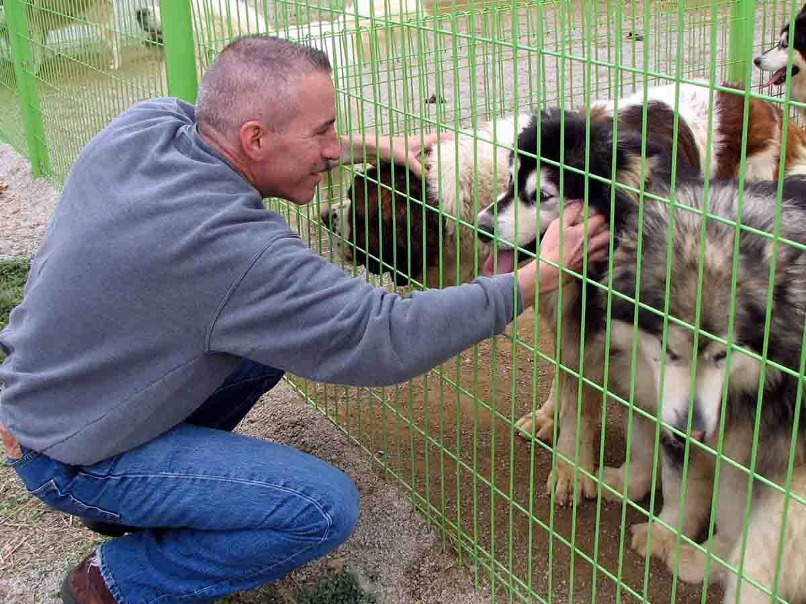

Volunteer
Volunteers are our most important asset at Friends with Paws. They help keep the shelter clean and safe for the animals, give the animals special attention, and help out with front office work. We are always accepting new volunteers. Below, we've listed a few activities that we need new volunteer for and some job openings. If you are interested in filling any of these roles, please feel out our volunteer application or job application form.
- Dog walkers (volunteer needed)
- Dog groomers (volunteer needed)
- Cat groomers (volunteer needed)
- Assistant Manager (full-time job)
- Vet tech (full-time job)
Volunteer Descriptions
- Beginner Volunteer
- A beginner volunteer usually helps clean cages and spends time visiting with the animals. Training is available if a volunteer would like to do more around the shelter.
- General Volunteer
- A general volunteer does a little bit of everything, from cleaning cages to training the animals to helping with baths. Requires multiple training sessions.
- Dog Walkers
- Our dog walkers are very important as they help our dogs get a chance to stretch their legs and get some exercise. Requires multiple training sessions.
- Dog/Cat Groomers
- Our groomers do the dirty business of helping our animals stay clean and healthy. Requires multiple training sessions.
Job Descriptions
- Assistant Manager
- Assists our office manager complete and file paperwork, help with adoptions, prepare volunteers, complete inventory and payroll, etc. Requires at least a bachelor's degree in business/management and 1-2 years of experience.
- Vet Tech
- Veterinary technicians assist veterinarians in the care of animals. They may perform an initial evaluation of the animal's condition, clean and wrap wounds, check vital statistics, collect samples and administer medication.
- Veterinarian
- Veterinarians diagnose, prevent, and treat a variety of animal illnesses and diseases. They administer tests, observe conditions in animals, perform surgery, and prescribe medication and/or therapy. Work Environment. Veterinarians work in private clinics or animal hospitals.